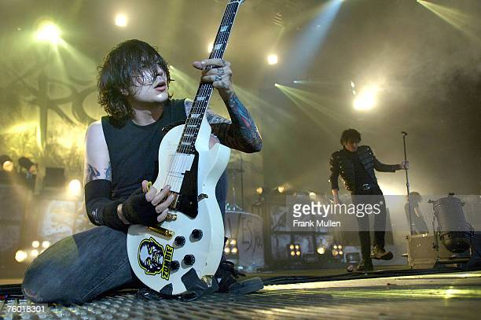

MY CHEMICAL ROMANCE
My Chemical Romance es una banda estadounidense de rock, formada en el año 2001 en el estado de Nueva Jersey, e integrada en la mayor parte de su historia por el vocalista Gerard Way, el bajista Mikey Way y los guitarristas Ray Toro y Frank Iero; también Matt Pelissier y Bob Bryar fueron alguna vez los bateristas. En marzo de 2013, la banda anunció su separación;12 aunque tras casi siete años de inactividad, el 31 de octubre de 2019 anunciaron su reunión para una gira mundial que comenzaron el 20 de diciembre siguiente en Los Ángeles (California).13
Su estilo musical ha sido asociado a los géneros rock, punk, pop punk, post-hardcore. Entre las influencias que han citado están diversos artistas como Queen, MC5, Misfits, Black Flag, The Beatles, Morrissey o Teenage Fanclub. La crítica, asimismo, ha dicho que la esencia de la banda recae en el drama,14 y que durante su carrera produjeron «un rock and roll de los más viscerales y dramáticos en la historia reciente».15 Luego de firmar con la discográfica Eyeball Records, crearon en el año 2002 su álbum debut, I brought you my bullets, you brought me your love. Posteriormente se integraron a Reprise Records, y fue en 2004 cuando publicaron Three cheers for sweet revenge, disco que les dio la fama mundial con canciones como «Helena», «The ghost of you» o «I'm not okay (I promise)». Su siguiente trabajo fue The Black Parade, de 2006, en el cual presentaron un sonido más elaborado, clásico y con influencias de los años setenta,16 en canciones como «Welcome to the Black Parade» o «Teenagers». En 2010, después de haber grabado un disco completo y desecharlo, volvieron al estudio de grabación y publicaron su cuarto álbum, llamado Danger days: the true lives of the Fabulous Killjoys, cuyos primeros sencillos fueron «Na na na» y «SING». Al momento de su disolución, en 2013, la banda trabajaba en un quinto álbum de estudio.17